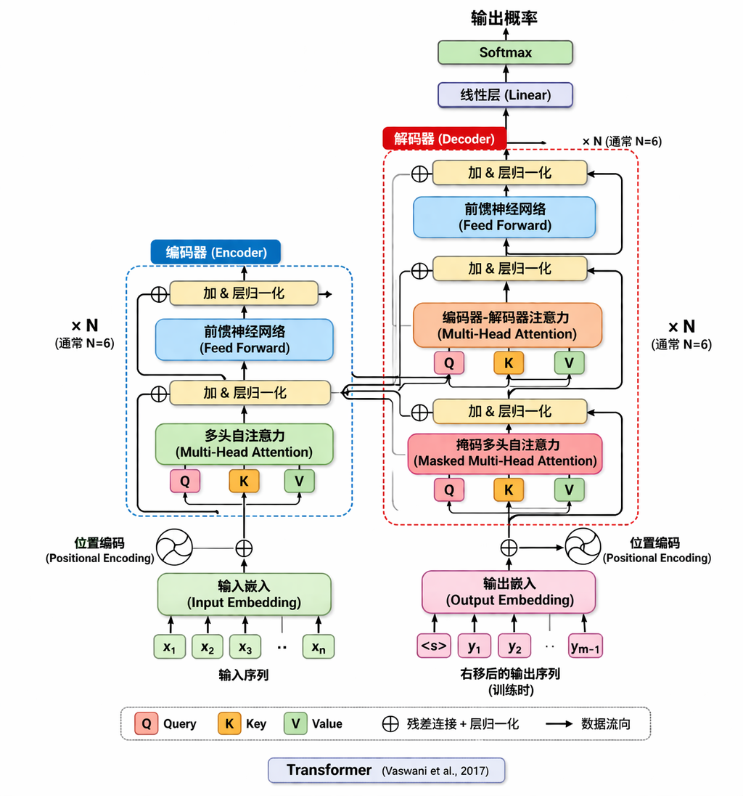

Transformer(Attention Is All You Need)
人工智能的核心思想是来自于2017年8位Google的员工发表的一篇论文 ：Attention is all you need，抛弃RNN的循环结构，完全基于自注意力机制捕捉序列中任意两个位置关系，实现并行计算。
Transformer之前
在Transformer之前，RNN及其变种LSTM几乎完全统治了自然语言处理，CNN用于图像识别处理
RNN(Recurrent Neural Network) 循环神经网络
擅长处理序列数据—-文本/音频/时间序列
核心思想：通过记忆前一步的信息来预测下一步的信息，每一步的计算都需要等待上一步完成。
问题一：无法并行计算。 这种顺序依赖的机制导致模型无法并行计算，很难充分利用现代计算机强大的并行处理能力。
问题二：记性不太好。 当句子或文本的长度稍长一些的时候，模型很难有效记住比较早的信息。
其改进版本LSTM没有彻底解决长距离依赖和并行问题。
CNN(Convolutional Neural Network) 卷积神经网络
擅长处理图像/空间结构数据—-图片识别，就像一个拿着放大镜仔细观察图片的人。
CNN虽然能进行并行计算，但他的视野比较窄，也很难记住全局信息
Transformer
架构图

实现并行计算：
- 训练时：一次性输入整个序列，通过矩阵计算所有位置的自注意力。
- 解码阶段：训练时Teacher Forcing并行；推理时自回归逐个生成，但可缓存KV(KV Cache)。
Multi-Head Attention
- 单头注意力可能只关注一种模式（如语法、语义）。
- 多头允许模型从不同子空间（不同表示投影）联合捕获多种特征，类似CNN的多通道。
自注意力机制的计算公式
$$ Attention(Q, K, V) = softmax(\frac{QK^T}{\sqrt{d_k}})V $$
其中除以缩放因子$\sqrt{d_k}$防止点积过大导致softmax梯度消失。假设Q和K是均值为0、方差为1的独立向量，点积结构方差为dk。若不缩放，方差过大导致softmax输出集中在0或1，梯度极小；缩放后方差恢复为1.